程序和进程：fork、execve 与 exit
课程：2026 春季学期《操作系统原理》，第 5 讲
讲师：蒋炎岩（jyy）
官方课程主页：https://jyywiki.cn/OS/2026/
官方讲义：https://jyywiki.cn/OS/2026/lect5.md
视频来源：Bilibili BV1N8w9zJENu
版权说明：课程讲义与幻灯片归蒋炎岩所有，采用 Creative Commons BY-NC 4.0 许可；本电子书是对课堂讲授的书面化重构，保留出处与许可说明。
导语：操作系统正片从虚拟化开始
(参考时间: 00:03:07)
前四讲建立了两个基础视角：
- 应用视角：操作系统 = 对象 + API；
- 硬件视角：操作系统 = 一个由固件加载的普通程序。
从本讲开始进入操作系统三大主题中的 Virtualization（虚拟化）：
操作系统如何把一台物理计算机抽象成多台“虚拟计算机”，让每个程序看起来都像独占一台机器？
核心抽象就是 进程（Process）。
课程仍使用较老的 Book8088 实物计算机演示：虽然它只有 16 位 CPU、没有 MMU，也没有现代保护模式，但同样可以运行程序、绘制图形和播放声音。它和今天的计算机在状态机模型上没有本质区别。
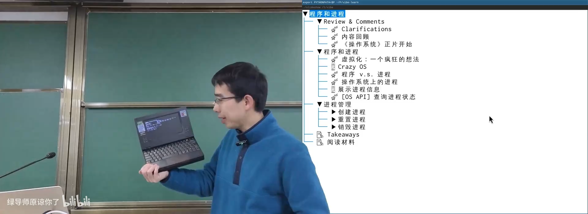
📷 16 位 Book8088 与状态机视角
回到原视频 (00:00:30)
上一讲现场调用的模型日志显示，实际使用的是 doubao-seed-2.0-code。模型速度很快，但指令遵循和复杂推理能力相对较弱。即便如此，它仍然可以完成不少操作系统实验任务，说明工具与基础模型正在快速变化。
📷 课堂日志揭示实际调用的模型
回到原视频 (00:02:07)
1. CrazyOS：用模拟器实现一个最小操作系统
1.1 可以同时运行两个程序吗？
(参考时间: 00:08:01)
假设没有操作系统，只有一个直接运行在硬件上的 C 程序。程序通常是顺序执行的：
main();
p1();
p2();
如果 p1 是死循环，p2 永远不会开始。
但我们能否不用硬件 MMU，也不依赖真实操作系统，在软件里模拟两个程序“同时运行”？
答案是肯定的。
在汉诺塔的非递归实现中，我们已经知道：
- 每个程序都是一个状态机；
- 状态包括寄存器、内存、栈帧和 PC；
- 只要不断取出下一条语句并执行，就能模拟程序运行。
如果模拟器持有 p1 和 p2 两份状态，就可以轮流推进：
while (1) {
p = pickup_one();
p->single_step();
}
这就是 CrazyOS。
flowchart LR
P1["程序 P1 状态机"] --> C["CrazyOS 调度循环"]
P2["程序 P2 状态机"] --> C
P3["程序 P3 状态机"] --> C
C --> S["执行一条指令"]
S --> E{"是否 syscall?"}
E -->|"否"| C
E -->|"是"| H["处理系统调用"]
H --> C
真实操作系统不会逐条解释指令，而是把进程状态加载到 CPU 上运行一段时间，再通过中断保存和切换。这就是上下文切换与时间片轮转的原理。
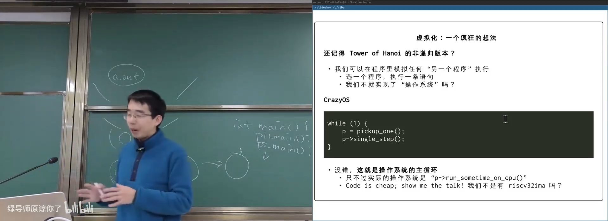
📷 CrazyOS 按轮转策略推进多个状态机
回到原视频 (00:08:01)
1.2 CrazyOS 如何运行真实程序
CrazyOS 使用 mini-rv32ima 模拟 RISC-V 指令。每个程序拥有：
- 独立的 CPU 状态；
- 独立内存；
- 程序入口 PC；
- 一个操作系统内部的状态结构
struct proc。
课堂中 P1 每次累加 10，P2 每次累加 1。CrazyOS 使用 Round-Robin 策略：
flowchart LR
P1["P1: x += 10"] --> R["Round Robin"]
P2["P2: x += 1"] --> R
R --> S1["执行 P1 一条指令"]
S1 --> S2["执行 P2 一条指令"]
S2 --> S1
系统还实现了自定义 putchar 系统调用：程序把字符放入缓冲区，遇到换行或缓冲区满时，操作系统代理输出。
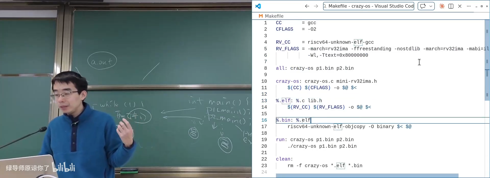
📷 CrazyOS 的 RISC-V 单步执行与自定义系统调用
回到原视频 (00:13:48)
执行 P1 和 P2 时，可以看到两个程序交替输出。数字越大的 P1 需要执行更多输出逻辑，因此推进速度逐渐落后于 P2，具体反映了“每条指令执行一次”而非“每次执行相同时间”的调度模型。
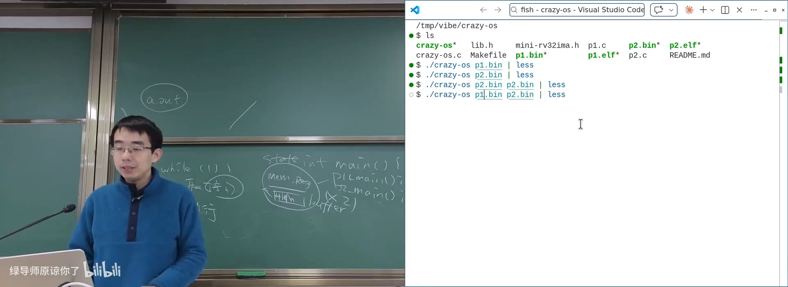
📷 CrazyOS 同时运行真实程序并交替输出
回到原视频 (00:19:21)
2. 程序和进程
2.1 程序是静态描述，进程是运行实例
(参考时间: 00:20:38)
程序是状态机的静态描述，包含：
- 初始状态；
- 状态迁移规则；
- 指令序列；
- 数据布局；
- 入口地址。
进程是程序状态机在操作系统中的一次运行实例：
程序：hello.bin
进程：PID 1234 正在运行 hello.bin
同一个程序可以同时运行多份，形成多个进程。每个进程都有自己的一份：
- 寄存器值；
- 内存内容；
- 栈和 PC；
- 打开文件；
- 操作系统内部状态。
flowchart TD
F["程序文件 / ELF"] --> P1["进程 1"]
F --> P2["进程 2"]
F --> P3["进程 3"]
P1 --> S1["独立内存 / 寄存器 / OS 状态"]
P2 --> S2["独立内存 / 寄存器 / OS 状态"]
P3 --> S3["独立内存 / 寄存器 / OS 状态"]
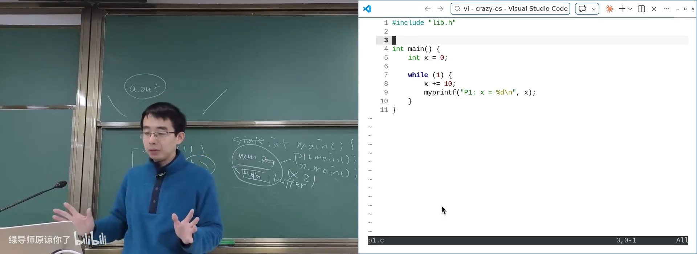
📷 程序是静态描述，进程是运行中的状态机实例
回到原视频 (00:20:38)
2.2 进程还有哪些操作系统状态？
(参考时间: 00:27:47)
应用程序从自身内存和寄存器只能看到程序状态，无法直接看到操作系统保存的额外信息。
真实进程可能拥有：
pid：进程号；ppid：父进程号；pgid：进程组；- UID、EUID、GID、EGID；
- 命令行参数；
- 调度信息与优先级；
- 已使用 CPU 时间和内存；
- 打开的文件描述符；
- 信号处理状态；
- 地址空间映射。
课堂让 AI 编写工具，通过 /proc 和系统调用尽可能完整地展示进程状态。
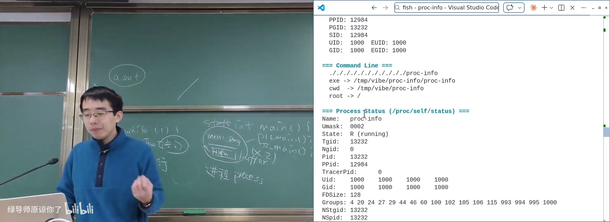
📷 展示进程自身不可直接访问的操作系统状态
回到原视频 (00:27:47)
2.3 procfs：用文件系统观察进程
UNIX 发明了 procfs，把进程信息映射为文件目录：
/proc/<pid>/
/proc/self/
可以通过：
readdir();
open();
read();
读取：
cmdline：启动命令与参数；status：进程基本信息；stat：调度与运行状态；maps：地址空间映射；fd/：打开的文件描述符；cwd：当前工作目录；- 其他子系统和内核状态。
flowchart LR
P["用户进程"] --> V["VFS"]
V --> F["procfs"]
F --> K["进程 / 调度 / 内存 / 文件内核对象"]
K --> F
F --> P
procfs 是操作系统信息的宝库，也是理解进程内部状态的优秀入口。
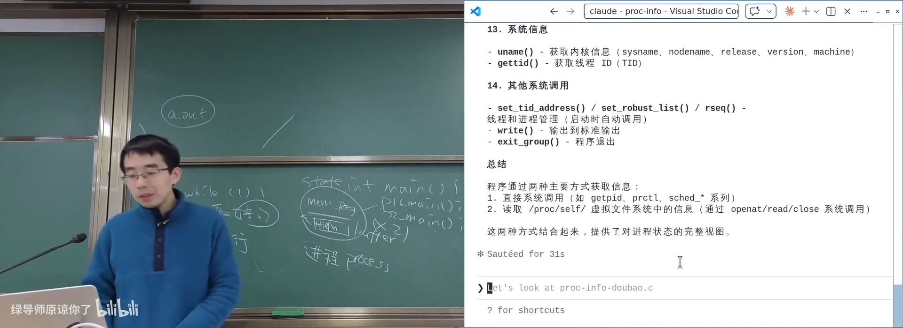
📷 通过 procfs 和系统调用探索进程状态
回到原视频 (00:30:45)
3. 进程管理：创建、重置、销毁
3.1 操作系统是状态机管理者
进程管理可以概括为三类操作：
| 操作 | 直观 API | UNIX API |
|---|---|---|
| 创建状态机 | spawn(path, argv) |
fork() |
| 重置状态机 | load(path, argv) |
execve() |
| 销毁状态机 | terminate(status) |
_exit() |
UNIX 没有直接提供 spawn，而是采用：
Spawn = fork + execve
这使创建进程具有极大的灵活性。
3.2 fork：完整复制当前状态机
pid_t fork(void);
fork() 的行为是立即复制当前进程：
- 寄存器和内存的完整状态；
- 栈和 PC；
- 打开文件等操作系统资源；
- 进程的一些内部属性。
如何区分父子进程？
- 子进程：
fork()返回 0； - 父进程：
fork()返回子进程 PID； - 失败：返回 -1，并设置
errno。
pid_t pid = fork();
if (pid == -1) {
perror("fork");
} else if (pid == 0) {
/* 子进程 */
} else {
/* 父进程，pid 是子进程号 */
}
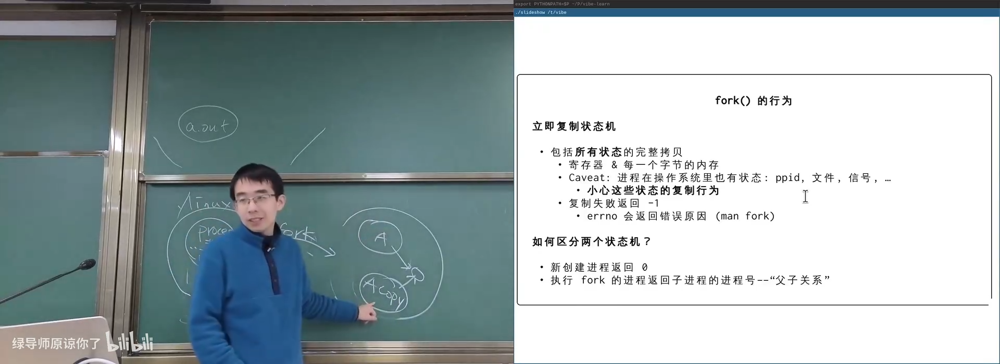
📷 fork 完整复制当前进程状态
回到原视频 (00:42:37)
课堂中在 CrazyOS 里实现的 fork 也只需要：
- 找到空闲
struct proc； - 复制旧进程全部状态；
- 设置父子进程不同的返回值。
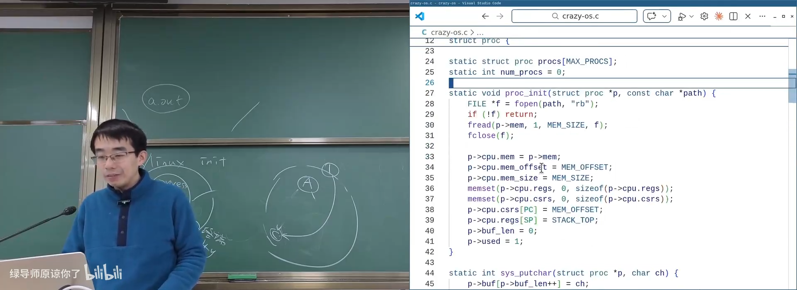
📷 CrazyOS 中几行代码实现的 fork
回到原视频 (00:49:33)
3.3 进程树与孤儿进程
进程通过父子关系形成树：
flowchart TD
A["A"] --> B["B"]
B --> C["C"]
A --> D["D"]
如果进程 B 先退出，C 的 ppid 应该是什么？
如果保留 B 的 PID，而 B 的编号之后可能被新进程复用，就会把一个错误进程识别为父进程。
UNIX 采用的办法是：
- PID 1 永远不会退出；
- 失去父进程的孤儿进程被重新托管给 PID 1；
- 这样每个进程的
ppid始终合法。
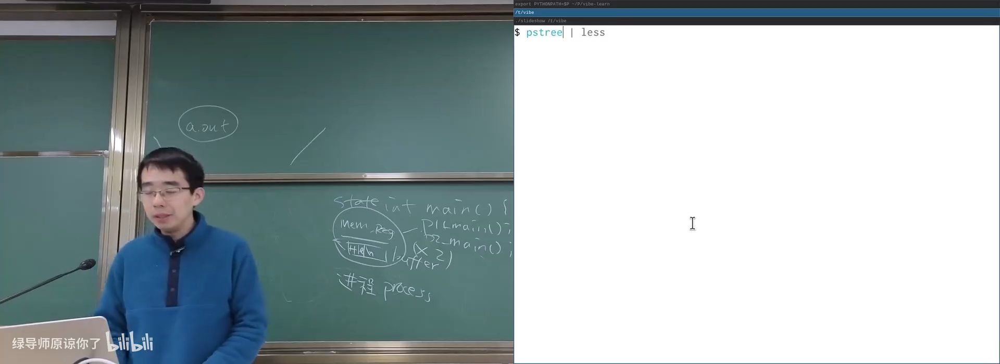
📷 进程树、父子关系与孤儿进程重新托管
回到原视频 (00:34:31)
课堂让 AI 创建五层进程树，随机退出部分进程，再用 Mermaid 可视化整个父子关系，直观看到孤儿进程被重新挂到 1 号进程下。
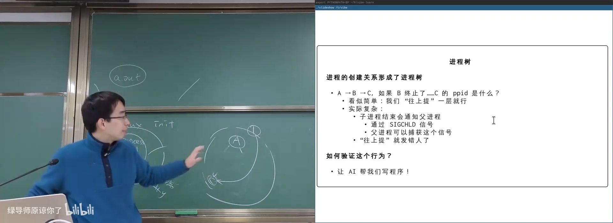
📷 可视化进程树验证孤儿进程行为
回到原视频 (00:47:00)
3.4 fork bomb
如果持续执行：
while (1) {
fork();
}
进程数量会按指数增长：
1 -> 2 -> 4 -> 8 -> ...
这就是 Fork Bomb。它会快速耗尽进程表、内存等资源。
flowchart TD
P0["1 个进程"] --> P1["2 个进程"]
P1 --> P2["4 个进程"]
P2 --> P3["8 个进程"]
P3 --> P4["16 个进程"]
P4 --> PX["资源耗尽"]
现代 Linux 有 OOM 保护和进程组识别能力，通常可以终止恶意进程组，但恶意程序仍可能造成严重的资源冲击。
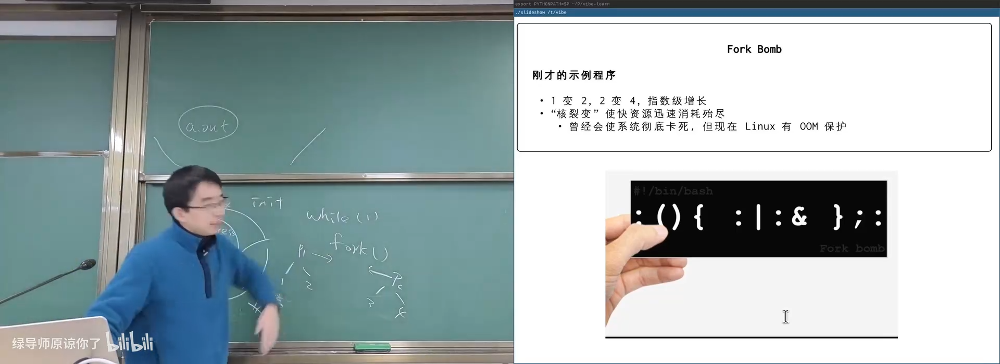
📷 Fork Bomb 的指数级进程增长
回到原视频 (00:52:11)
3.5 fork 的复制为什么仍然高效
真实 Linux 不会每次 fork() 都逐字节复制整块内存，而是使用 Copy-on-Write（写时复制）：
- 父子进程初始共享物理页；
- 页面标记为只读；
- 任一方写入时触发页错误；
- 操作系统再复制该页面。
flowchart LR
P["父进程页表"] --> M["共享物理页<br/>只读"]
C["子进程页表"] --> M
P -->|"写入"| F["写保护异常"]
C -->|"写入"| F
F --> N["复制页面"]
N --> P2["父进程私有页面"]
N --> C2["子进程私有页面"]
因此，只读的大数据结构可以在父子进程间长期共享。
3.6 fork 的典型应用
共享预处理结果
先计算大素数表或大型索引，再 fork 多个子进程，让它们共享这份只读结果。
Android Zygote
Android 的 Zygote 进程预先加载 Java 运行时和公共库。启动应用时：
- Zygote 执行
fork()； - 子进程继承已初始化运行时；
- 子进程加载应用代码；
- Zygote 自身保持不变。
flowchart LR
Z["Zygote<br/>已加载公共运行时"] --> F1["fork"]
Z --> F2["fork"]
F1 --> A1["应用 A"]
F2 --> A2["应用 B"]
Z --> Z
这显著缩短了应用冷启动时间。
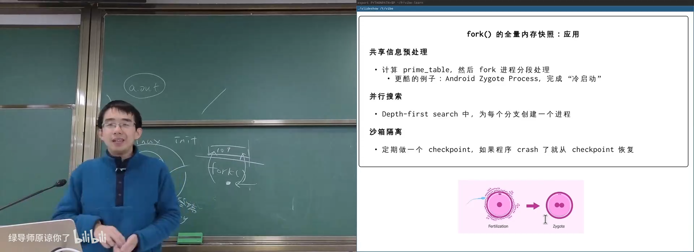
📷 Android Zygote 利用 fork 加速应用启动
回到原视频 (00:56:43)
Fork-based DFS
DFS 搜索时，每个分支都可以 fork 一个进程继承当前搜索状态：
- 分支 A 在子进程 A 中继续；
- 分支 B 在子进程 B 中继续；
- 子进程自然拥有当前路径、迷宫和访问标记的完整快照。
flowchart TD
S["当前搜索状态"] --> F1["fork 分支 1"]
S --> F2["fork 分支 2"]
S --> F3["fork 分支 3"]
F1 --> D1["继续 DFS"]
F2 --> D2["继续 DFS"]
F3 --> D3["继续 DFS"]
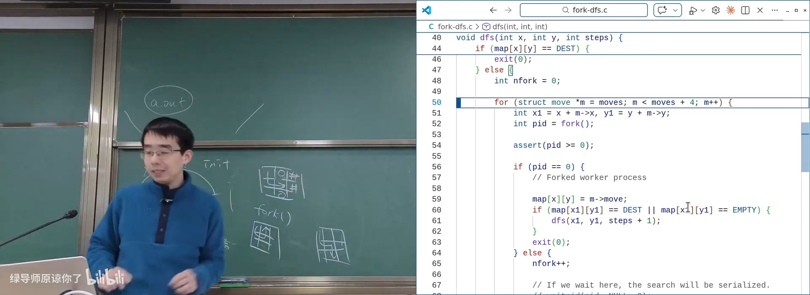
📷 Fork-based DFS 同时探索多个搜索分支
回到原视频 (01:00:02)
检查点与故障恢复
长期服务可以定期 fork 出“检查点进程”保存完整内存状态。主进程崩溃后，再由检查点进程接管。
4. fork 程序的精确行为
4.1 展开循环理解 fork
考虑：
for (int i = 0; i < 2; i++) {
fork();
printf("Hello\n");
}
循环展开后：
i = 0;
fork();
printf("Hello\n");
i = 1;
fork();
printf("Hello\n");
第一次 fork 后进程从 1 变 2；第二次 fork 后从 2 变 4。最终应有 4 个进程，每个执行一次最后输出，总计 4 行。
flowchart TD
P0["1 个进程"] -->|"第一次 fork"| P1["2 个进程"]
P1 -->|"第二次 fork"| P2["4 个进程"]
P2 --> O["4 次最终 printf"]
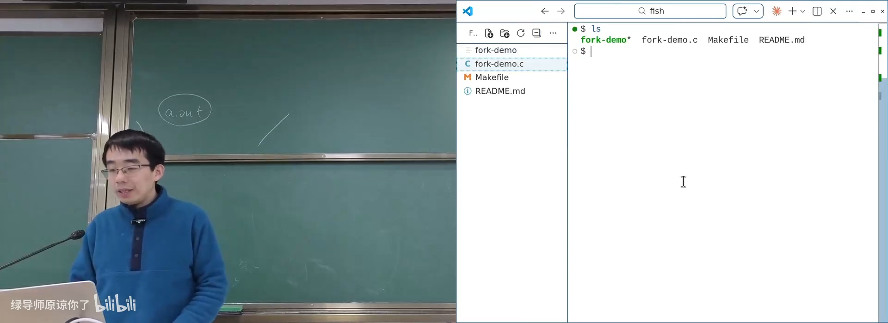
📷 通过状态机展开精确推导 fork 程序行为
回到原视频 (01:02:55)
4.2 为什么终端看到 6 行，管道却看到 8 行？
运行：
./a.out
./a.out | wc -l
可能看到：
- 终端：6 行；
- 管道：8 行。
原因是 C 标准库的输出缓冲会随输出目标改变。
flowchart TD
P["printf 写入 libc 缓冲区"] --> T{"stdout 是终端?"}
T -->|"是"| L["行缓冲<br/>遇换行 write"]
T -->|"否"| F["全缓冲<br/>缓冲区满或退出才 write"]
L --> W1["write 到终端"]
F --> R["fork 时复制未刷新缓冲区"]
R --> W2["重复输出缓冲区内容"]
第一次 fork 时，如果先前的 Hello 仍留在缓冲区中，它也会被复制到子进程。多个子进程最终刷新缓冲区，导致某些内容重复。
flowchart LR
B["libc 缓冲区: Hello"] --> F["fork"]
F --> B1["父进程缓冲副本: Hello"]
F --> B2["子进程缓冲副本: Hello"]
B1 --> O["最终输出 Hello"]
B2 --> O
这提醒我们：
- 系统调用
write是真正向操作系统输出； printf只写入 libc 缓冲区；- 缓冲策略可能改变程序可见行为；
- 可以使用
setbuf()或stdbuf控制缓冲。
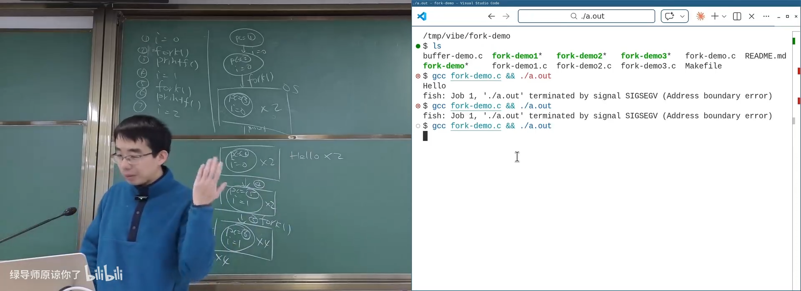
📷 printf 缓冲区随 fork 复制导致输出次数变化
回到原视频 (01:09:38)
5. execve：把当前状态机复位成另一个程序
5.1 execve 是唯一真正“执行程序”的系统调用
int execve(
const char *filename,
char *const argv[],
char *const envp[]
);
执行 execve 后：
- 当前进程的用户态内存和寄存器被替换；
- 程序被加载为新的初始状态；
- PC 指向新程序入口；
argv和envp被传递给新程序；- 进程号、工作目录、打开文件等操作系统状态通常保持。
flowchart LR
A["进程 A 当前状态"] --> E["execve(path, argv, envp)"]
E --> B["同一个 PID"]
B --> N["新程序初始状态"]
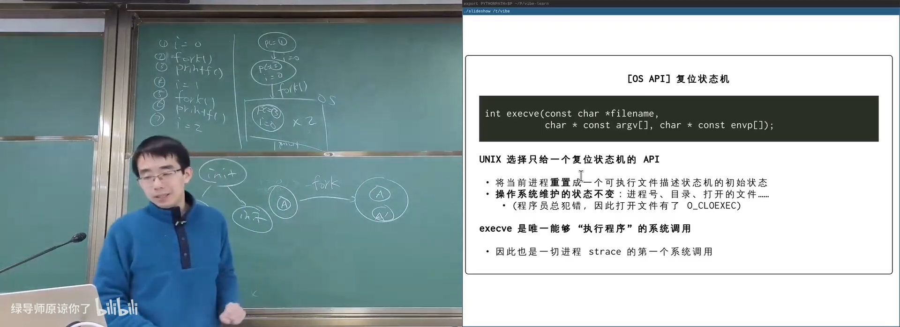
📷 execve 将当前进程复位为新程序
回到原视频 (01:13:31)
5.2 main 参数从哪里来？
int main(int argc, char *argv[]) {
...
}
argc：参数数量；argv：参数向量；argv[0]：程序启动时的命令名；argv[n]：其余参数。
例如：
./a.out 1 2 3
会得到：
argv[0] = "./a.out"
argv[1] = "1"
argv[2] = "2"
argv[3] = "3"
所有进程 strace 的第一条系统调用通常是 execve，即使是几乎不调用其他系统调用的最小程序。
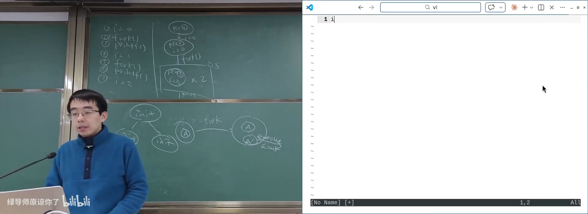
📷 main 的 argc 与 argv 来自 execve
回到原视频 (01:15:06)
5.3 环境变量 envp
环境变量是一组 KEY=VALUE 字符串：
PATH=...
HOME=...
PWD=...
DISPLAY=...
TERM=...
常用命令：
env
echo $PWD
echo $TERM
fork 创建子进程时会继承环境变量，execve 也会把它传给新程序。因此，把 API Key 直接放在环境变量里存在泄露风险：任何被启动的子进程都可能读取它。
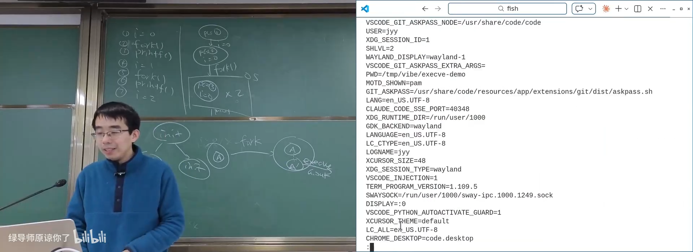
📷 环境变量随 fork 和 execve 传递
回到原视频 (01:18:15)
5.4 PATH：可执行文件搜索路径
Shell 执行：
gcc a.c
时，会按 PATH 中的目录顺序寻找 gcc：
flowchart LR
G["gcc"] --> P["读取 PATH"]
P --> D1["目录 1"]
D1 -->|"未找到"| D2["目录 2"]
D2 -->|"未找到"| D3["目录 3"]
D3 -->|"找到"| E["execve(full_path)"]
strace gcc 可以看到 GCC 逐个尝试：
execve("/usr/local/sbin/as", ...)
execve("/usr/local/bin/as", ...)
execve("/usr/sbin/as", ...)
execve("/usr/bin/as", ...)
如果把 PATH 设为空，GCC 就找不到汇编器 as；把 PATH 恢复为 /usr/bin，它又可以正常运行。
PATH="" /usr/bin/gcc a.c
PATH="/usr/bin/" /usr/bin/gcc a.c
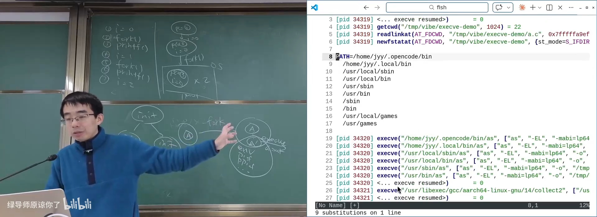
📷 通过 PATH 与 strace 确认可执行文件搜索过程
回到原视频 (01:23:04)
这再次证明“机器永远是对的”：程序行为都可以追溯到明确的环境状态和系统调用。
6. exit：销毁状态机
void _exit(int status);
_exit 立即终止当前进程，并把状态码交给父进程。标准库 exit() 会先执行清理和刷新缓冲区，再调用底层退出系统调用。
有了线程后，Linux 还区分：
exit：终止当前线程；exit_group：终止整个线程组。
stateDiagram-v2
[*] --> Created: fork
Created --> Running: 调度
Running --> Waiting: 等待 I/O / 事件
Waiting --> Running: 事件完成
Running --> Running: execve 重置
Running --> Zombie: _exit
Zombie --> [*]: 父进程 wait
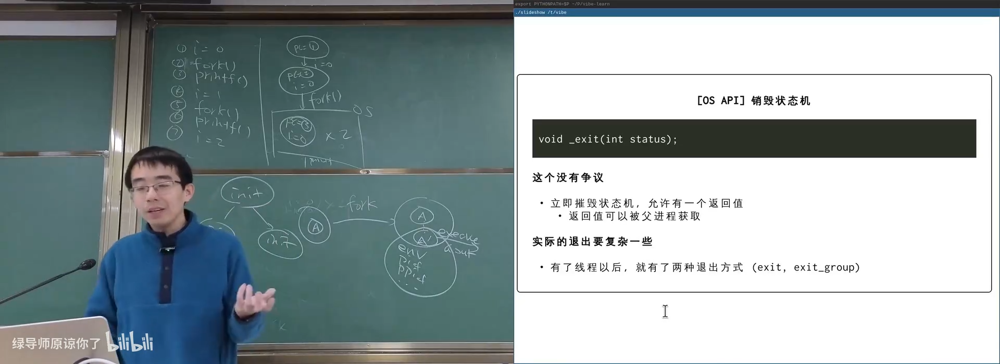
📷 exit 销毁进程状态机并返回退出码
回到原视频 (01:24:33)
7. UNIX 进程生命周期
典型创建流程：
pid_t pid = fork();
if (pid == -1) {
perror("fork");
} else if (pid == 0) {
execve(path, argv, envp);
perror("execve");
_exit(EXIT_FAILURE);
} else {
int status;
waitpid(pid, &status, 0);
}
flowchart TD
P["父进程"] --> F["fork"]
F --> C["子进程：返回 0"]
F --> P2["父进程：返回子 PID"]
C --> E["execve 重置状态机"]
E --> A["运行新程序"]
A --> X["_exit"]
P2 --> W["waitpid 获取退出状态"]
这就是 UNIX 世界中几乎所有进程的来源：
Spawn = fork + execve
Linux 启动后最初只有一个 PID 1 进程，之后所有进程都由它或它的后代逐步孵化出来。
📷 PID 1 孵化整个操作系统进程世界
回到原视频 (00:34:31)
8. 本讲总结
mindmap
root((程序和进程))
CrazyOS
mini-rv32ima
单步执行
Round Robin
自定义 syscall
程序与进程
静态描述
运行实例
OS 内部状态
procfs
创建
spawn 的直观设计
fork 完整复制
返回值区分父子
写时复制
fork bomb
Zygote
Fork-based DFS
重置
execve
argc / argv
envp
PATH
销毁
_exit
exit_group
waitpid
核心结论：
- 程序是状态机的静态描述，进程是它的运行实例。
- CrazyOS 证明只需轮流执行多个状态机，就能模拟多进程与系统调用。
- 真实操作系统额外维护大量进程状态，可通过
procfs和系统调用观察。 - Windows 倾向直接提供
CreateProcess一类 spawn API。 - UNIX 使用
fork完整复制当前状态机，再用返回值区分父子进程。 - 孤儿进程会被重新托管给 PID 1，保证父进程关系合法。
fork配合写时复制可以用较低成本共享大块只读状态。- fork 可以用于并行搜索、Zygote 冷启动优化和检查点恢复。
execve是唯一真正执行程序的系统调用，负责设置新程序初始状态。main(argc, argv, envp)的参数来自execve。PATH决定 shell 与运行时按什么顺序搜索可执行文件。exit销毁状态机；fork + execve + exit构成 UNIX 进程生命周期。
Spawn = fork + execve。
计算机世界里没有魔法，只有被精确定义的进程状态与系统调用。
附：官方参考与延伸阅读
课程与讲义：
课程演示：
阅读材料：
- Operating Systems: Three Easy Pieces
- 第 3 章：Dialogue；
- 第 4 章：Processes；
- 第 5 章：Process API。
man 2 forkman 2 execveman 2 exitman 7 signalman 5 procman 3 setbufman 1 stdbuf
版权说明：课程讲义与幻灯片的著作权归蒋炎岩所有，采用 Creative Commons BY-NC 4.0 许可。电子书正文为课堂内容的书面化重构，脚本占位符已替换为视频画面或官方资料渲染图；引用与来源链接均保留在本页。